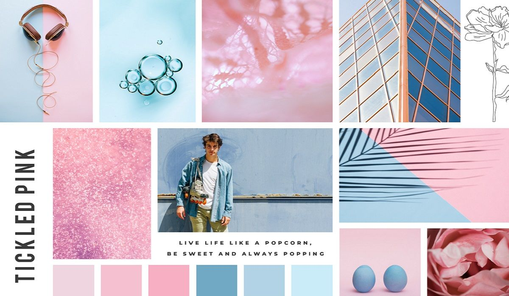
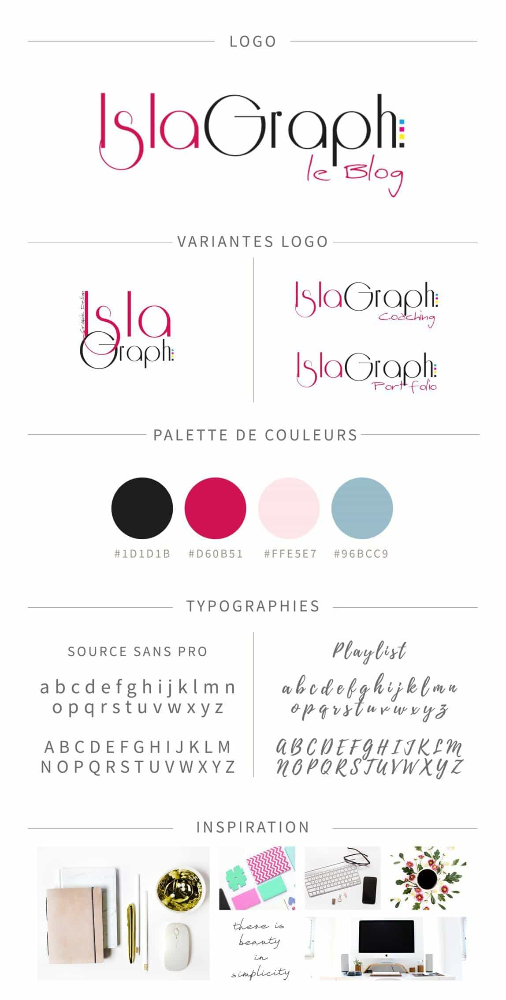
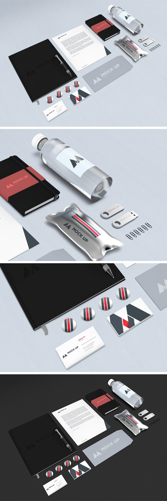
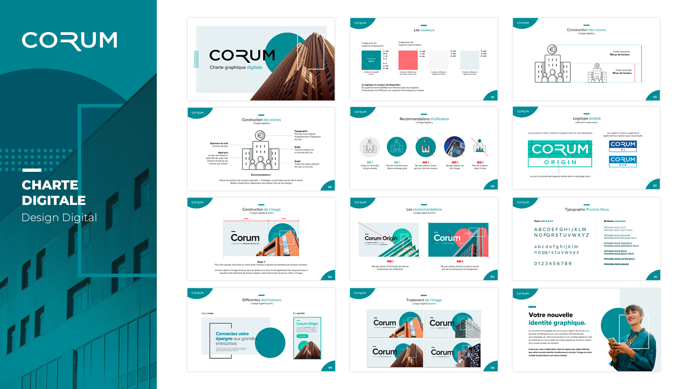
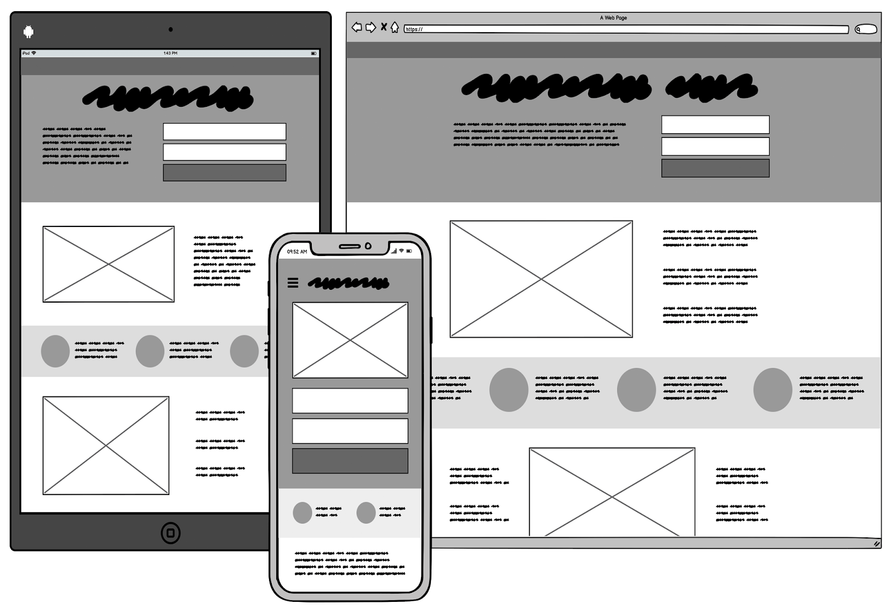
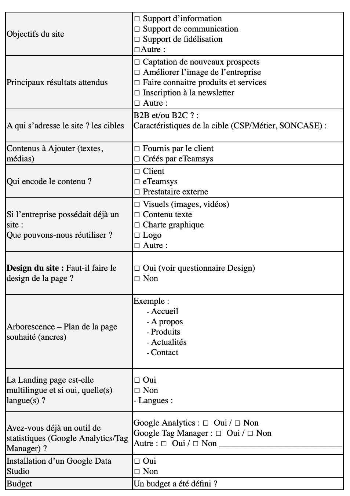
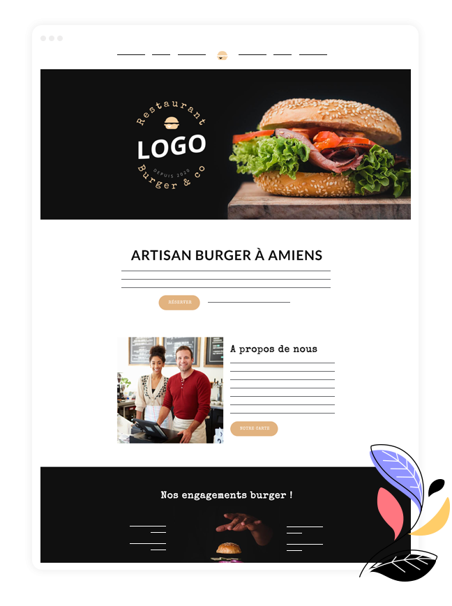
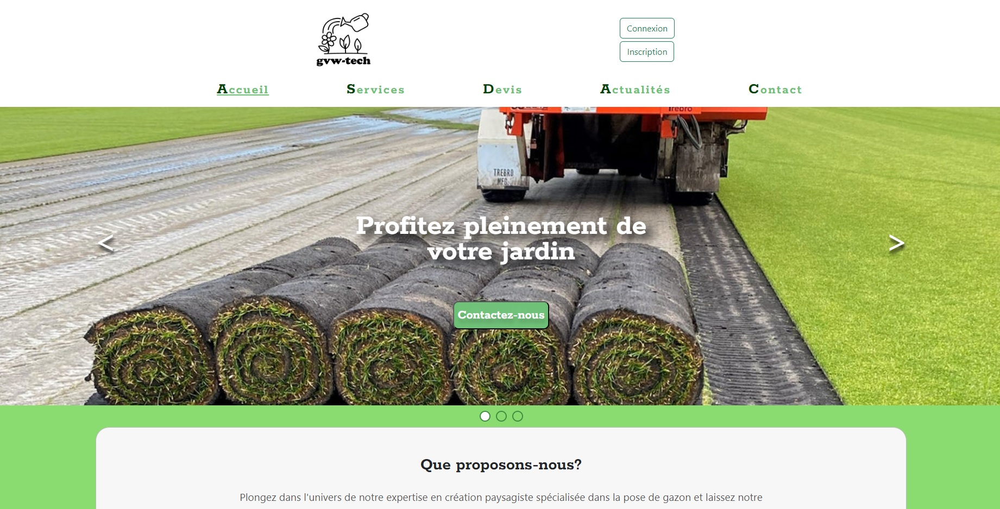
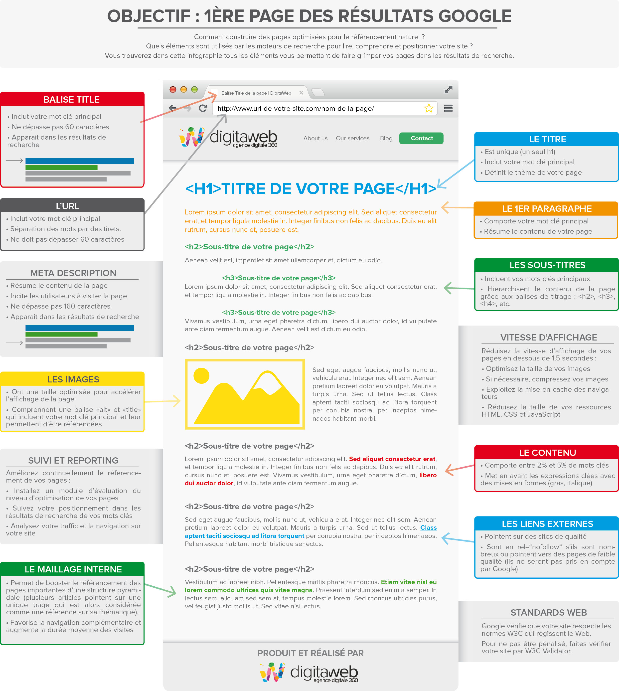
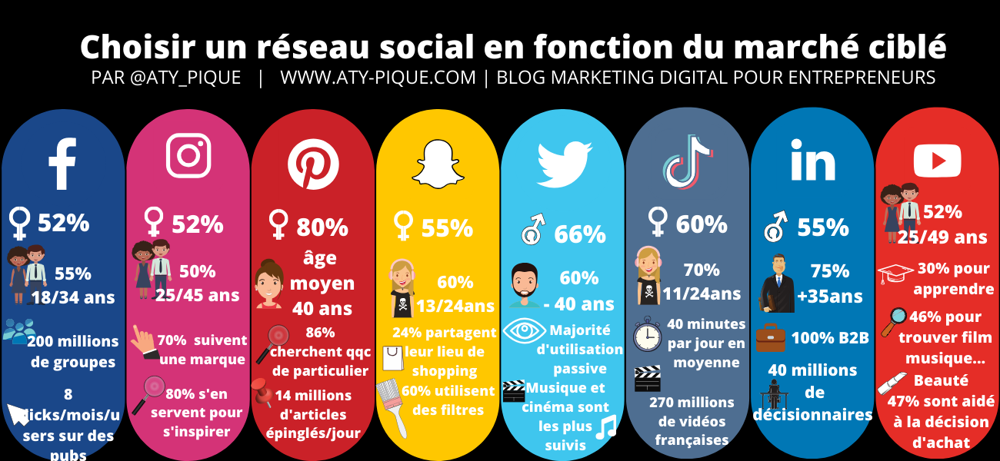

Moodboard
Un moodboard est une planche d'ambiance graphique ou planche d'inspiration qui sert à définir l'orientation visuelle d'un projet créatif, qu'il s'agisse de la création d'un site e-commerce, de la refonte d'un site vitrine ou d'un logo.
Brandboard
Un brandboard, comme tu peux l'imaginer d'après sa traduction littérale (brand : marque et board : tableau), est un document qui tient sur une page et recense les points clés de ton identité visuelle : les différentes versions du logo, les couleurs, les typographies et le style de photos à privilégier ainsi que les ...
Mockup
Un Mockup, parfois écrit Mock up, ou Mock-Up, désigne d’abord une maquette utilisée à des fins d’études, de tests, ou de démonstration. Dans le domaine de la conception d’interfaces, le Mockup est une représentation du futur site ou de l’application mobile. Personne ne s’accorde unanimement sur une définition. Le Mockup est un modèle réaliste de ce à quoi ressemblera la future interface utilisateur. C’est une simulation statique, en moyenne ou haute-fidélité, de l’UI, avant le processus de développement. Exemple , ce que donnerait le logo sur un vetement , une tasse , une vitre , un panneau publicitaire ,etc.
Charte graphique + wireframe
La charte graphique, dont la dénomination correcte est cahier des normes graphiques, est un document de travail qui contient l'ensemble des règles fondamentales d'utilisation des signes graphiques qui constituent l'identité graphique d'une organisation, d'un projet, d'une entreprise.
 Cahier des charges
Un cahier des charges est un document qui doit être respecté lors de la conception d'un projet. Le cahier des charges peut contenir un grand nombre d'informations et de données parmi lesquelles on retrouve : Les fonctionnalités nécessaires de la solution. Les contraintes techniques du projet. L'historique de projet similaire ou un état de l'existant, etc.
Site vitrine
Un site vitrine est un site qui, par définition, sert essentiellement à présenter une entreprise, une marque, ou une activité, sans générer de ventes directes
Site web frontend & back-end
Site web contenant des fonctionnalités avancée et d'une base de donnée.
SEO (Search Engine Optimization)
£Le SEO (Search Engine Optimization) est l'acronyme qui signifie « Optimisation pour les moteurs de recherche » en français. C'est un ensemble de techniques permettant de positionner un site web dans les moteurs de recherche afin de le rendre visible auprès des internautes.
Création des réseaux sociaux
Création des réseaux sociaux qui va servir de pub pour le site internet.
